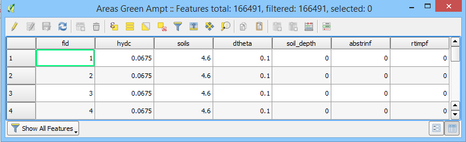
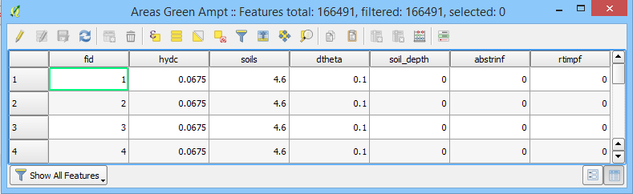

Data Storage¶
Database Format¶
The Plugin uses a [GeoPackage] for data storage. It is an SQLite database with spatial extensions for storing vector and raster data. The GeoPackage or *.gpkg file is a binary file that stores data tables in SQLite format. SQLite is a public domain data base engine that is used and supported worldwide. More information about SQLite can be found at the website. The GeoPackage encoding system is approved by an Open Geospatial Consortium, a standard that is deemed sustainable by the U.S. Library of Congress (Library of Congress, 2017).
The FLO-2D Plugin uses the GeoPackage to store the data in a series of layers and tables. The Plugin requires a single GeoPackage file for each project. The project units and coordinate reference system are defined in the GeoPackage at the start of the project. The QGIS program has an extensive geodetic registry. It also supports “on the fly” mapping so layers of various coordinate systems can be viewed. The Plugin requires that all data used in the processing routines must be in the baseline coordinate system defined in the GeoPackage.
See the Technical Reference Manual for an outline of the GeoPackage data.
User Layers¶
Data is arranged as vector layers and tables in the Plugin. The vector layers are organized as follows:
Points
Polylines
Polygons
There is a layer for each FLO-2D model component that is digitized by the user and schematized into the “schematic” layers and tables. These layers are used to define the schematized layers that are FLO-2D format. The layers can be directly edited using the general QGIS editor tools and the FLO-2D Editor Widgets. They can also be edited using the Attribute Table Editor and the Field Calculator.

Schematic Layers¶
The Schematic Layers are organized such that the Plugin can generate the FLO-2D *.DAT files from them. These layers, created by the schematization tools, should not be manipulated by the user. The layers are vector layers with attribute fields that fill the FLO-2D data files.

Hydraulic Structure Layers¶
The Hydraulic Structure Layers are used to create and store data for the hydraulic structure system. This is the schematic data that is converted to the HYSTRUC.DAT file when the program is exported to FLO-2D Data. Data can also be imported into these layers and tables when a project is imported from *.DAT files.
Data is written to these tables in the following methods:
Importing from FLO-2D Project;
Importing from a shapefile;
Digitizing directly.

Storm Drain Layers¶
The Storm Drain Layers are used to create and store data for the storm drain system.
Data is written to these tables in the following methods:
Importing from FLO-2D Project;
Importing from an INP file;
Importing from a shapefile;
Digitizing directly.

Infiltration Layers¶
The schematic Infiltration Layers are polygons that store infiltration data computed from the infiltration tables.
 

Infiltration Tables¶
The Infiltration Tables join grid elements to the Infiltration Layers and are produced by the Infiltration Editor Widget.


Tables¶
The Tables layer stores the data that is converted into the *.DAT files.
Data is written to these tables in the following methods:
Importing from FLO-2D Project;
Schematizing data.
Rain Tables¶
The Rain Tables layer stores the data for uniform rainfall, spatially variable rainfall, and spatially and temporally variable rainfall.
Data is written to these tables in the following methods:
Importing from project;
Schematizing uniform rainfall;
Calculating spatially variable RainARF from NOAA Atlas data;
Calculating spatially and temporally variable data from NEXRAD radar and realtime storm data.

Calibration Data¶
The Calibration Data layers are point vector layers that store the water surface elevation at a known point and the time to peak water surface elevation at a known point.
Data is written to these tables in the following methods:
Importing from project;
Directly digitizing layer.
The data is written to the WSURF.DAT file and WSURFTIME.DAT file.

Evaporation Tables¶
The Evaporation Tables layer store spatially variable data for estimating evaporation at runtime.
Data is written to these tables in the following methods:
Importing from project;
Evaporation tool.

Levee and Breach Tables¶
The Levee and Breach Tables layer is used to store the prescribed breach, erosion breach, and levee fragility data tables. These labels are filled by the Breach Widget.
Data is written to these tables in the following methods:
Importing from project;
Schematic edits;
Levee Breach Editor widget.

Sediment Transport Layers and Tables¶
The Sediment Transport layers, and Tables layer store the spatial and global data for sediment transport and mudflow.
The data is written to these tables in the following methods:
Importing from project;
Directly digitizing the data into the sediment transport areas;
Calculating the data from the Areas and assigning it to the grids.

Channel Tables¶
The Channel Tables layer stores data for user layers and schematic layers.
The data is written to these tables in the following methods:
Importing from project;
Running import RAS tool;
Digitizing channels;
Calculating right banks;
Interpolating cross sections;
Schematizing channel data.
Multiple Channel Tables¶
The Multiple Channel Tables layer stores data for user layers and schematic layers.
The data is written to these tables in the following methods:
Importing from project;
Multiple Channel Layers;
Multiple Channel Widget.
External Layers¶
This group of layers is data that was imported into the project by the User. External data can be grouped and saved on the map just like the standard data that is stored in the GeoPackage. External Layers are not part of the GeoPackage. They are separate shapefiles, tables and rasters that the User imports into the map.
Note: External layers are not part of the GeoPackage so they must be kept with the Project Folder if the data is transferred to a different computer